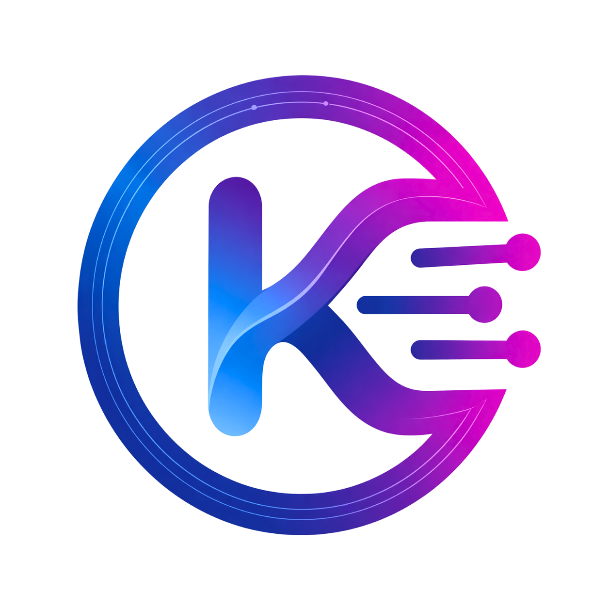
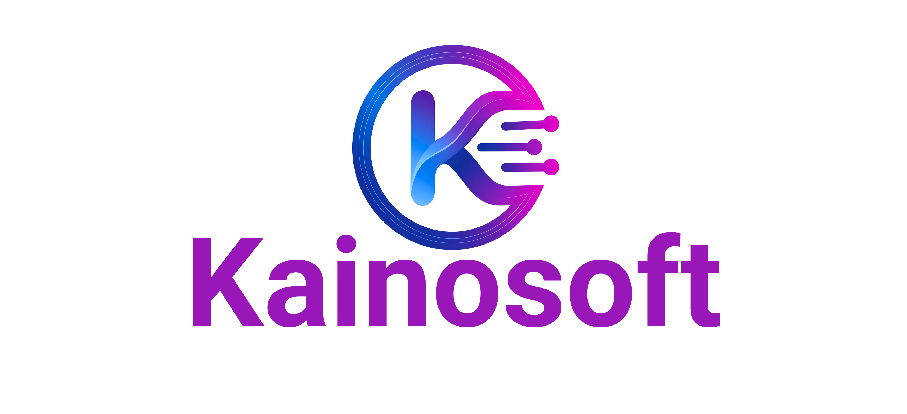

□
Desarrollo de productos de software
De estrategia de producto a plataformas listas para producción con modelos de dominio claros.
Empresa de productos de software con IA
Diseñamos, desarrollamos y escalamos plataformas SaaS, sistemas cloud-native y software inteligente para empresas listas para crecer.

Qué construimos
Trabajamos el ciclo completo del producto: arquitectura, ingeniería, integración de IA, entrega cloud, rendimiento y mantenibilidad.
De estrategia de producto a plataformas listas para producción con modelos de dominio claros.
Sistemas por suscripción, arquitectura multi-tenant, roles, dashboards, flujos e integraciones.
Funciones de IA para asistentes, automatización, clasificación, búsqueda e insights operativos.
Aplicaciones cloud-native para confiabilidad, velocidad de despliegue, observabilidad y crecimiento eficiente.
Discovery, arquitectura, UX, backend, frontend, lanzamiento, iteración y escala como un solo sistema.
Fundaciones técnicas para productos rápidos, mantenibles y preparados para nuevas capacidades.
El software debe construirse como producto, no como proyecto.
KainoBox es nuestro próximo lanzamiento SaaS para negocios fitness, creado para membresías, operación, flujos con clientes y crecimiento inteligente.

Mercados
Flujos seguros, sistemas operativos, plataformas con datos críticos y experiencias confiables.
Gestión de negocio, membresías, agenda, relación con clientes y herramientas de crecimiento.
Equipos de producto y empresas en crecimiento que necesitan bases duraderas sin fricción empresarial.
Construido desde México para empresas regionales e internacionales que necesitan ejecución seria.
Modelo de trabajo
Aclarar modelo de negocio, usuarios, flujos, restricciones y métricas de éxito.
Definir arquitectura, modelo de datos, enfoque cloud y límites de integración.
Entregar incrementos limpios y probados en backend, frontend, IA e infraestructura cloud.
Mejorar rendimiento, confiabilidad, observabilidad y capacidades del producto en el tiempo.
Iniciar proyecto
Cuéntanos qué estás construyendo, hacia dónde debe crecer el sistema y qué importa más para la siguiente versión.